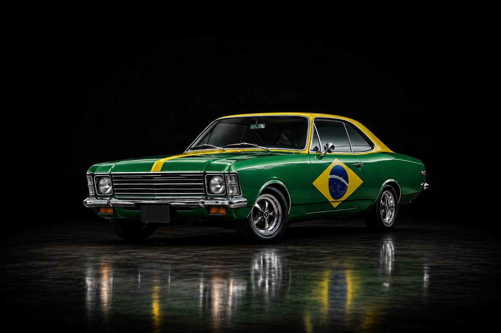
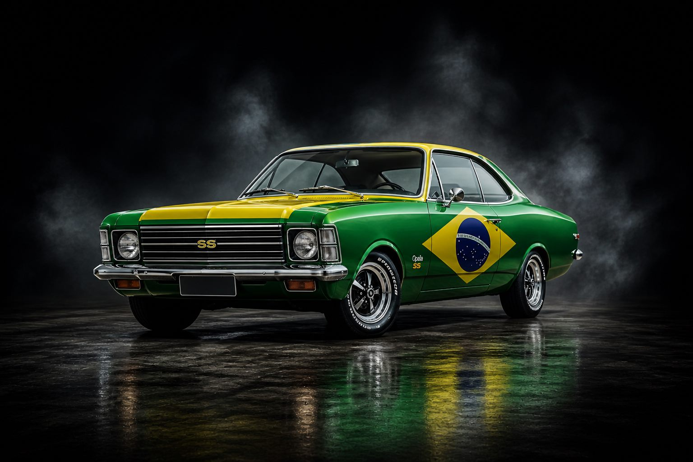
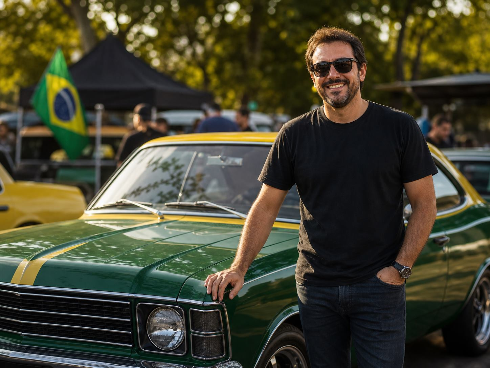
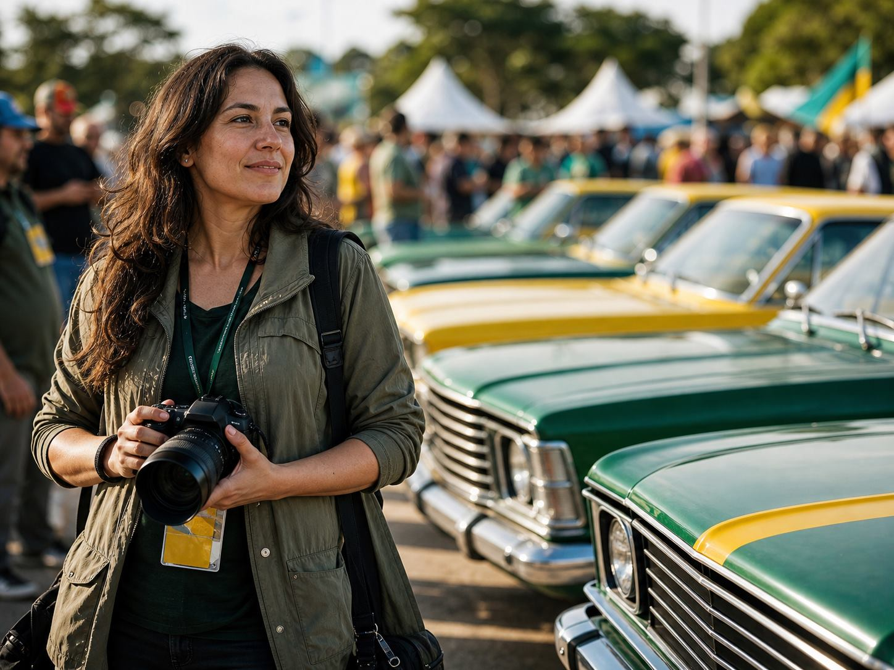
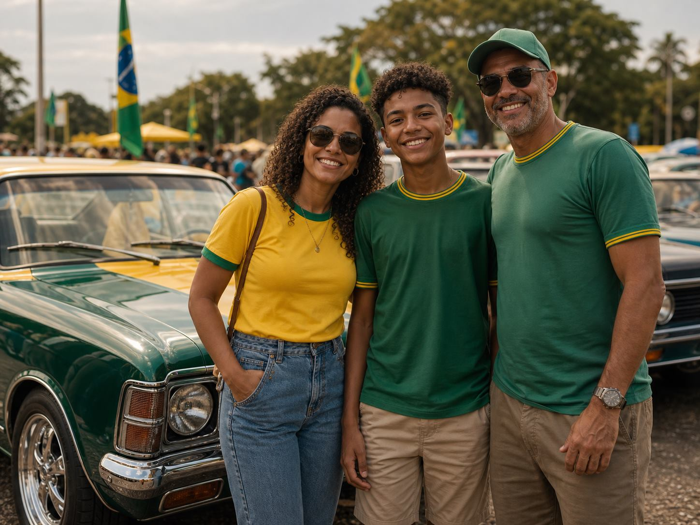

Projetos exclusivos
Um espaço feito para quem não só admira, mas vive o Opala.

Stand oficial - Opala Brasil | Festival do Opala
O ronco que arrepia.
Os clássicos que marcaram gerações.
E um stand feito pra quem vive o Opala de verdade.
Alguns carros passam. O Opala fica.
Uma experiência feita para quem não quer só olhar carros, mas sentir a história de perto.
Motor, estrada, liberdade e lembranças que ainda fazem barulho.
Entre no site oficial, garanta seu ingresso e venha ao stand da Opala Brasil.
Conexão emocional
O ronco do motor que arrepia.
O cheiro da gasolina que fica na memória.
A liberdade que só quem vive entende.
Isso não é passado.
É parte de você.
O evento
Nos dias 1, 2 e 3 de maio, o Festival do Opala reúne centenas de clássicos em um só lugar: restaurados, modificados e cheios de histórias que atravessam gerações.
Stand Opala Brasil
Um espaço feito para quem não só admira, mas vive o Opala.
Peças, histórias e visuais que poucos já viram de perto.
Uma forma diferente de enxergar esse clássico brasileiro.
Um ponto de encontro para quem quer sair dali com memória, foto e assunto.

Galeria
Não é só sobre ver carros. É sobre sentir, lembrar e fazer parte.
Planejar minha visita ao standUrgência
A experiência da Opala Brasil acontece dentro do Festival do Opala. São só 3 dias para ver tudo isso de perto.
Prova social
Reações de visitantes que ajudam a mostrar por que o festival prende mais do que uma foto na tela.

“Achei que ia só ver carro antigo, mas o clima do evento prende a gente.”
Visitante
“Tem detalhe em todo canto. Você começa tirando foto e termina conversando com todo mundo.”
Fotógrafa
“Levei a família sem saber se iam curtir. No fim, ninguém queria ir embora cedo.”
Família visitanteResumo